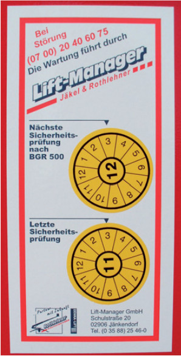

Vor der ersten Inbetriebnahme werden in Verantwortung des Herstellers einer Hubarbeitsbühne folgende Prüfungen durchgeführt:
Die Dokumentation der Abnahmeprüfung erfolgt im Prüfbuch mit der CE-Konformitätserklärung (DIN EN 280).
In der Verantwortung des Betreibers liegen:
Prüfungen in Verantwortung des Betreibers werden in der Regel durch befähigte Personen nach BetrSichV durchgeführt. Wer als befähigte Person anerkannt werden kann, legt der BG-Grundsatz „Prüfung von Hebebühnen“ (BGG 945) fest (siehe auch Abschnitt 5.4). Eine Ausnahme bilden die außerordentlichen Prüfungen. Diese führen Sachverständige durch.
Die Prüffristen für regelmäßig durchzuführende Prüfungen ergeben sich aus der Gefährdungsbeurteilung nach § 3 Abs. 3 der BetrSichV. Eine Hilfestellung bei der Festlegung der Prüfintervalle bietet die BG-Regel „Betreiben von Arbeitsmitteln“ (BGR 500).
Im Kapitel 2.10 „Betreiben von Hebebühnen“ heißt es:
„Hebebühnen sind nach der ersten Inbetriebnahme in Abständen von längstens einem Jahr durch einen Sachkundigen zu prüfen.“
Von dieser Zeitvorgabe darf nur in begründeten Ausnahmefällen abgewichen werden.
Die Ergebnisse der Prüfungen sind unter Aufführung etwaiger Mängel aufzuzeichnen. Mit seiner Unterzeichnung bestätigt der Unternehmer oder ein von ihm beauftragter Mitarbeiter die Kenntnisnahme des Prüfprotokolls. Aufgeführte Mängel sind je nach Sicherheitsrelevanz vor dem erneuten Einsatz der Hubarbeitsbühne zu beheben. Bestehen diesbezüglich Unklarheiten, sollte mit dem Prüfer Rücksprache genommen werden. Hält der Prüfer eine Nachprüfung nach Abstellung von Mängeln für erforderlich, ist dem natürlich Folge zu leisten.
Prüfnachweise sind mindestens bis zur nächsten Prüfung aufzubewahren.
| Beim Einsatz außerhalb des Unternehmens, z. B. auf Baustellen oder in der Vermietung, ist der Nachweis der letzten Prüfung mindestens als Kopie bei der jeweiligen Hubarbeitsbühne mitzuführen. |
Zur Kennzeichnung der fristgerecht durchgeführten regelmäßigen Prüfung hat sich das Anbringen von Prüfplaketten (Bild 7-1) bewährt. Die Abstellung der bei der Prüfung festgestellten Mängel ist jedoch nur durch Einsicht in das entsprechende Prüfprotokoll feststellbar.

Der BG-Grundsatz „Prüfbuch für Hebebühnen“ (BGG 945-1) stellt dem Prüfpersonal folgende Prüflisten zur Verfügung: